6. Spatially distributed systems
6.1 Breaking of spatial symmetry
So far we have considered systems in which the value of the variables (concentrations, temperatures and the like) was the same at different points of the sample. As a consequence, the kinetic equations analysed took into account the dependence of the variables on time only, and spatial coordinates were absent. For many real systems such an approximation is excessively simplified. In this connection, let us consider the question of what features of kinetic behaviour can be expected in the case of a nonlinear chemical reaction in a spatially distributed system.
As the model reaction we shall use the Brusselator scheme, which was described earlier in Section 4.3. Since the concentrations of the substances can now be different at different points of the sample, the variables X and Y depend on the spatial coordinates. The change of the concentrations of the substances at a given point occurs not only as a consequence of the reactions but also as a result of the diffusion of these substances. Thus, the kinetic equations take the form:
where Dx, Dy are the diffusion coefficients of the substances X and Y, and is the diffusion Laplace operator. Δ
For simplicity, let us consider a one-dimensional spatially distributed system. This consideration will correspond to the reaction being carried out in a thin long test tube or capillary of length l. The coordinate r will describe the distance from the bottom of the test tube. To analyse equations it is necessary to specify boundary conditions. Dirichlet-type boundary conditions can be defined as constant values of the concentrations at the boundaries of the test tube. Let the concentrations corresponding to the steady state (4.5) be maintained at these boundaries:
More realistic, however, will be Neumann-type boundary conditions (absence of fluxes at the boundaries):
Under these conditions, the eigenfunctions of the diffusion operator will be:
? for the boundary conditions ;
? for the boundary conditions ;
Let us determine the stability of the steady-state solution , which assumes that the concentration of X and Y is the same at all points of the sample. For this purpose, let us linearise the system of equations near the steady-state solution:
where: .
The solutions of the system of equations satisfying the boundary conditions are the functions , which are called the normal modes of the solution.
The general solution should be sought in the form:
Solution describes the change of the concentration X and Y if they are displaced from the steady state by small amounts and . The steady state will be stable if the real parts of the exponents are negative for any value of m (any mode). In this connection, we shall analyse the stability of each normal mode. For this purpose, let us substitute into and obtain the matrix of linear coefficients for one mode:
The characteristic equation for matrix has the form:
where:
The solution of equation is:
Solution contains positive roots if one of two conditions is fulfilled:
Let us consider these conditions separately. Condition is transformed to the form . It follows from it that the steady-state solution Xs, Ys loses its stability when the critical concentration is reached:
Condition is a parabolic dependence on the quantity m. In this connection, it is obvious that as the concentration of substance B is increased, the critical value is reached for the normal mode m = 0. This mode corresponds to a uniform spatial distribution of all the substances in the sample, and the loss of stability corresponds to the appearance of an oscillatory solution (a limit cycle), which was described in Section 4.3.
Condition is transformed to the form:
The stability boundary of the solutions in accordance with condition is shown in Fig. 6.1. It can be seen from the figure that as the concentration of B is increased, the mode with m 0 loses stability. This must be the mode whose integer m lies closest to the minimum of the curve in Fig. 6.1 and for which the critical value Bc'' is reached. From the dependence ? one can find the coordinates of this minimum:
Fig. 6.1 shows the loss of stability of the normal mode m = 2. This means that the corresponding function in solution grows with time and determines the dependence of the concentration of X and Y on the spatial coordinate r. Thus, in the course of the reaction a spontaneous breaking of the uniform distribution of the reactants in the system and the formation of a spatial dissipative structure occur. Fig. 6.2 shows an example of a dissipative structure of this type, observed in the study of the Belousov–Zhabotinsky reaction.
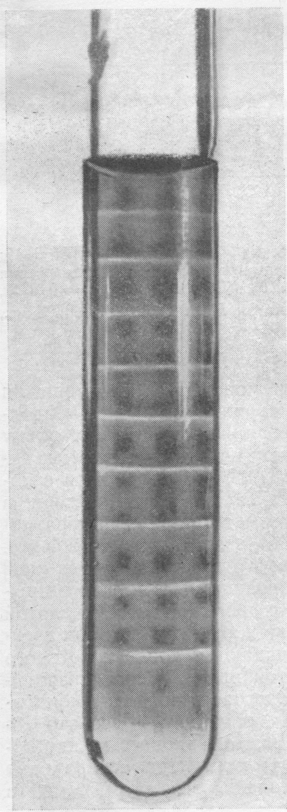
Depending on which of the critical values Bc' or Bc'' turns out to be smaller as the concentration of B is increased, either an oscillatory regime of the course of the reaction or a breaking of the spatial homogeneity of the system is realised. It can be seen from expression that the critical value Bc'' decreases for Dx < Dy. A more accurate analysis indeed shows that the inequality of the diffusion coefficients of the reactants favours the appearance of spatially non-uniform solutions.
6.2. Turing structures. Phase waves
In the previous section we considered the appearance of a spatial dissipative structure in a one-dimensional system. In the case of two- or three-dimensional objects, the formation of such structures is also possible. Since this phenomenon was first theoretically considered by Turing in 1952, such formations have received the name Turing structures. Generalising the results obtained by us earlier in formulas -, we can say that the behaviour of nonlinear spatially distributed systems is determined by the quantities . If the real part of all the eigenvalues of the linearised system is negative, the system reaches a steady state characterised by a uniform distribution of the reactants. If the real part of becomes positive at k = 0 while its imaginary part is not equal to zero, more or less complex oscillatory behaviour is observed in the system. If the real part of is positive in a certain range of values of k, is negative at k = 0, and at the same time the imaginary part of is equal to zero, steady Turing structures are observed. Experimental examples of such structures in two-dimensional systems are given in Fig. 6.3.
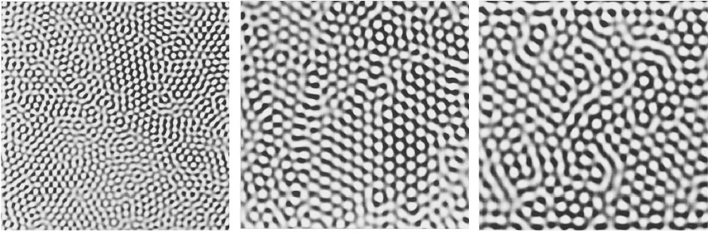
If, however, the real part of is positive at some non-zero k while its imaginary part is not equal to zero, wave instability is observed in the system.
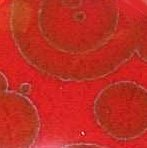
In experiment it is observed as the propagation of waves of various shapes over a two-dimensional sample. In Fig. 6.4 one can see concentric waves propagating from a certain centre. Such waves have received the name pacemakers or targets (target patterns). If such a wave is disrupted, spiral waves, shown in Fig. 6.5, can be formed.
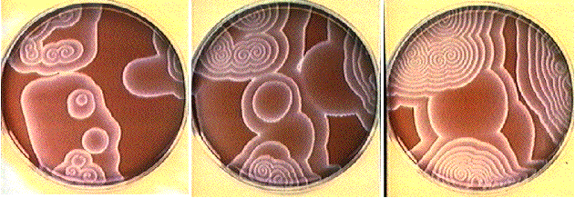
As already noted above, a difference in the values of the diffusion coefficients of the reactants favours the appearance of spatial and spatio-wave structures. In the case of the Belousov–Zhabotinsky reaction, a substantial difference in the diffusion coefficients can be ensured by carrying out the reaction in a reversed microemulsion as the reaction medium. A reversed microemulsion is a hydrocarbon medium containing water microdroplets several nanometres in size, stabilised by a surfactant. When the Belousov–Zhabotinsky reaction is carried out in such a medium, most of the reactants are located inside the water microdroplets, and their diffusion coefficient is determined by the mobility of these droplets. However, some of the active intermediates in this reaction (Br2, the BrO2∙ radical) are well soluble in the nonpolar hydrocarbon, and their diffusion coefficient turns out to be 10–100 times larger. Under these conditions, considerably more diverse spatio-wave structures are observed, some of which are shown in Fig. 6.6.
6.3. Examples of dissipative structures in chemistry. Formation of spatial structures and reaction waves on catalyst surfaces
Examples of the breaking of spatial symmetry in chemistry are not confined to the systems described above, in which homogeneous chemical reactions such as the Belousov–Zhabotinsky, CIMA and similar reactions proceed. Another important and extensive class of chemical objects characterised by the formation of spatial dissipative structures is reactions proceeding on the surface of a catalyst. The best characterised of these reactions is the oxidation of CO by oxygen on a platinum surface.
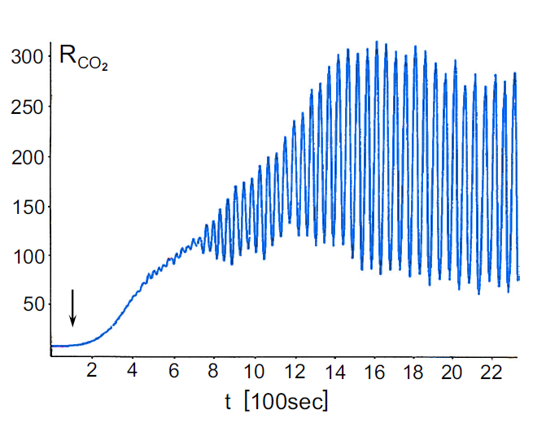
When this reaction proceeds under conditions of low reactant pressures (and small coverages of the catalytic surface), oscillatory kinetics of the oxidation reaction can be observed (Fig. 6.6). The feedback mechanism causing these oscillations is connected with the properties of the catalyst surface. The surface layers of platinum can have different types of crystalline ordering. For example, Fig. 6.7 shows two types of structural organisation of the surface layer of the (110) face of platinum. One of these structures, which is customarily denoted 1×1 (Fig. 6.7, left), has a higher affinity for the CO molecules adsorbed on it. The other structure of the crystal face, 1×2 (Fig. 6.7, right), is also able to adsorb CO molecules; however, the free energy of the surface with adsorbed molecules is in this case somewhat higher than in the case of the 1×1 structure. Consequently, upon adsorption of a certain critical amount of CO (coverage ), a surface of the 1×2 type spontaneously transforms into a surface of the 1×1 type. Thus, a reconstruction (rearrangement) of the surface under the action of the adsorbed molecules takes place.
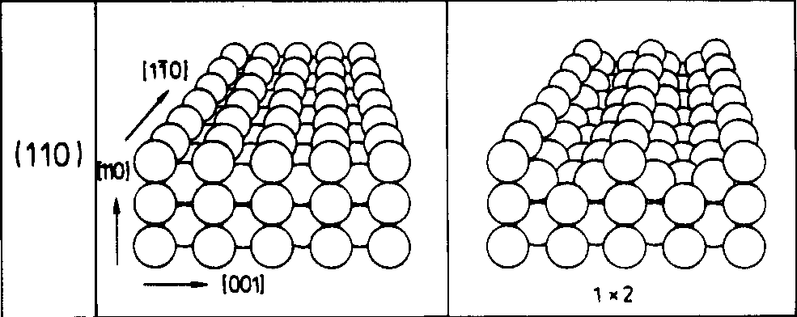
Besides the different affinity for CO molecules, different types of platinum surface have different abilities for the dissociative adsorption of oxygen: on the 1×1 surface it proceeds faster than on the 1×2 surface. These two properties of the platinum surface – the ability of the surface to reconstruct under the action of the adsorbate and the different reactivity of the different types of surface structures – give rise to the positive feedback mechanism leading to nontrivial kinetic behaviour in the oxidation of CO.
When there is a large number of adsorbed CO molecules, the platinum surface reconstructs with the formation of a surface of the 1×1 type. As a consequence, the process of adsorption of oxygen with the formation of adsorbed O atoms is accelerated, and the oxidation reaction of the adsorbed CO molecules proceeds faster. In the course of this reaction, molecules of the product, CO2, take the place of the adsorbed molecules of the reactant CO. The surface depleted of CO reconstructs into the less active 1×2 type. In this state, the dissociative adsorption of oxygen and the oxidation reaction slow down until desorption of the product (CO2), adsorption of new CO molecules and reconstruction of the surface back into the active 1×1 form occur. Thus, an oscillatory regime of the oxidation of carbon monoxide is established.
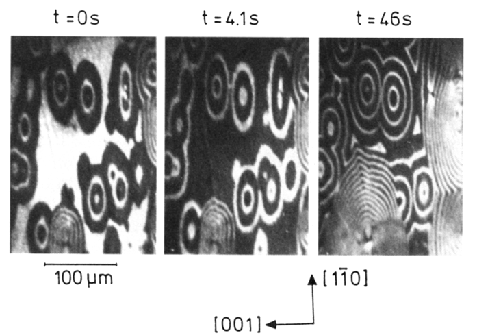
The course of the reaction in the oscillatory regime is accompanied by surface diffusion of the reacting particles, which leads to the formation of reaction waves. Examples of such waves, propagating in the course of the oxidation of CO on platinum, are shown in Fig. 6.8. In this reaction, other, more complex types of spatial structures, such as spiral waves, chaotic waves and steady Turing structures, can also be observed. Examples of some of these dissipative structures are presented in Fig. 6.9.
It should be noted that the theoretical description of dissipative structures in reactions on a surface is complicated by a number of features of both the chemical and the diffusion terms of the kinetic equations. These features include: the necessity of describing phase transitions of the catalyst surface layers, anisotropic diffusion (different mobility of the adsorbed molecules along different crystallographic axes of the catalyst), the dependence of the diffusion coefficient on the surface coverages, and so on. Also, in many real experiments, the effects of local heating and cooling due to adsorption and the chemical reaction cannot be neglected. In these cases, the surface distribution of the temperature and its change in the course of the reaction must be considered explicitly.
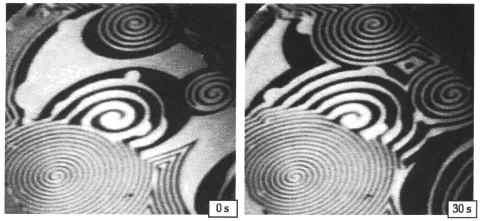
Oscillatory regimes of reactions on catalyst surfaces and the appearance of spatial dissipative structures in them are, apparently, a rather general phenomenon, discovered in a wide range of chemical processes, such as the interaction of carbon monoxide, ammonia and hydrogen with oxygen, the reduction of NO by hydrogen and carbon monoxide, and others, on metallic and oxide catalysts. At present, the study of these processes, the elucidation of their mechanisms and their theoretical description is a rapidly developing field of physical chemistry.
6.4. Examples of dissipative structures in chemistry. Oscillations and spatial structures in living systems
Another important direction in the study of dissipative structures is connected with the investigation of oscillatory processes and phenomena of breaking of spatial symmetry in living nature. The most thoroughly studied example of an oscillatory biochemical reaction is the process of glycolysis (Fig. 6.10). The mechanism of oscillations in this system is connected with the fact that the catalyst of one of the stages of glycolysis (phosphofructokinase, PFK) is activated by the product of this stage (adenosine diphosphate, ADP), which leads to the emergence of positive feedback and the possibility of the process proceeding in an oscillatory regime.
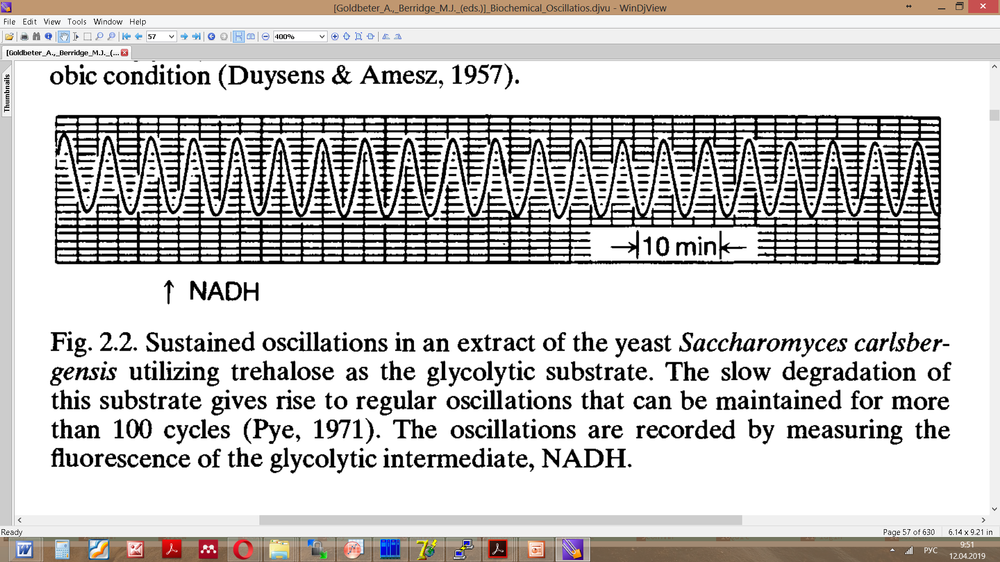
A classical example of the wavelike course of a chemical process in a biological system is the propagation of an electrical impulse along the membrane of a nerve cell, a neuron. The chemical mechanism of this process is connected with the opening and closing of ion channels of the cell membrane, whose permeability is controlled by the membrane potential. In turn, the membrane potential depends on the ion concentrations inside the cell and in the intercellular space, which leads to the emergence of positive and negative feedbacks in this system.
Another well-studied example of spatial structures in biological systems is connected with the amoebae Dictyostelium discoideum. Under conditions of food shortage, these organisms begin to release into the environment signalling molecules of cyclic adenosine monophosphate (cAMP), and the release of this substance occurs in an oscillatory manner. In response to an increased concentration of signalling molecules in the surrounding medium, other amoebae themselves begin to release cAMP, which makes it possible to propagate the signal over large distances. In parallel with the release of signalling molecules, the organisms begin to perform chemotaxis (movement) in the direction of the signal source. This leads to the aggregation of amoebae with the formation of a slime mould – a multicellular organism within which cells can migrate to where food is more abundant. The aggregation process described above of individual cells is accompanied by the propagation of waves of signalling molecules in the medium, as shown in Fig. 6.11.
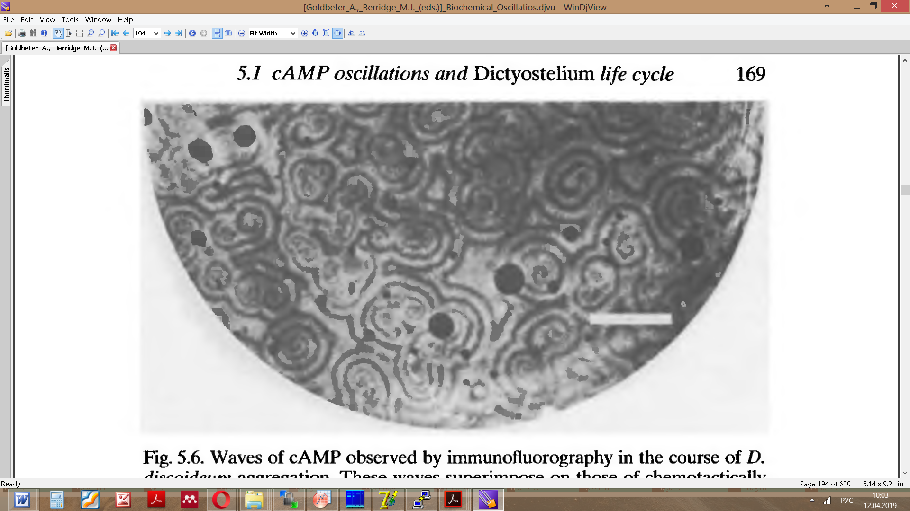
It is obvious that periodic processes are fundamental for many phenomena in living nature. With their help, the regulation of cell division cycles, intercellular information transfer, the processes of heartbeat, respiration, sleep–wakefulness cycles and the like are carried out. The emergence of dissipative structures in nonlinear biological media underlies the processes of morphogenesis (the formation of organs and tissues), the transmission of excitation in nervous and muscle tissues, and the appearance of pigmentation spots in animals and plants (Fig. 6.12).
The regulation of all the processes described is carried out by a large number of diverse signalling molecules, enzymes, transmitters and the like. In this connection, the mechanisms of these processes turn out to be very complex and are difficult to model quantitatively. To date, a kinetic description of these processes has been carried out only for a small circle of the simplest biochemical systems. The study and modelling of these phenomena is a captivating task of modern biochemical physics.
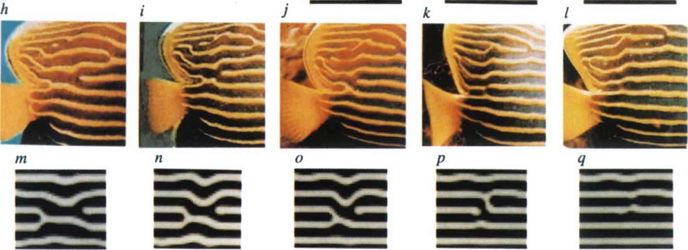
6.4. Examples of dissipative structures in chemistry. Liesegang structures
Yet another type of dissipative structures arising in chemical systems is observed when a precipitate forms from a solution under conditions of counter-diffusion of the components. Such structures are called Liesegang structures (or rings), after their discoverer. An example of the experimental observation of such rings is illustrated in Fig. 6.13. In this experiment, a Petri dish is filled with a thin layer of gelatine gel containing a solution of a cobalt salt, Co(NO3)2. At the centre of the dish there is a cylinder filled with an ammonia solution, which is in contact with the gel layer. The ammonia solution diffuses towards the periphery of the Petri dish and reacts with the cobalt salt to form the sparingly soluble cobalt hydroxide:
It is seen in Fig. 6.13 that the precipitate forms not continuously, but in the form of concentric rings. This phenomenon is connected with the peculiarities of the kinetics of crystallisation. For a precipitate to form, it is necessary that the concentration of the ions entering the composition of the solution exceed
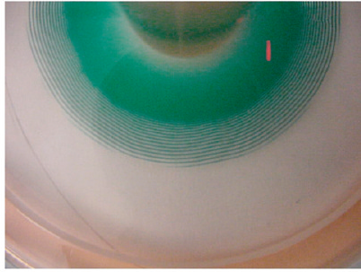
the solubility product, . However, this is not sufficient for the growth of crystals to begin: nuclei of the crystalline phase are needed, which form at a noticeable rate only at a sufficient supersaturation of the solution. The nuclei that have formed begin to grow, whereby the region of space near the growing crystals is depleted of both components of the mixture, including the cobalt ions, which diffuse from the adjacent regions towards the forming precipitate, as a consequence of which their concentration in this region decreases. For this reason, new nuclei cannot form in the immediate vicinity of the crystals that have formed, and the precipitation of the next portion of the precipitate occurs only when the ammonia concentration front reaches the region where the concentration of cobalt ions is high enough to create the necessary supersaturation of the solution.
The effect described manifests itself in geochemical systems, where the morphological features of some minerals are connected with the formation of Liesegang structures. When rocks form from melts under conditions of a gradient of the component concentrations, or upon infiltration of salt solutions through porous rocks, structures in the form of rings or bands may form, with different parts of which having different chemical composition. Such structures are found in agates, plagioclases, sandstones and other minerals. Some of these examples are shown in Fig. 6.14.
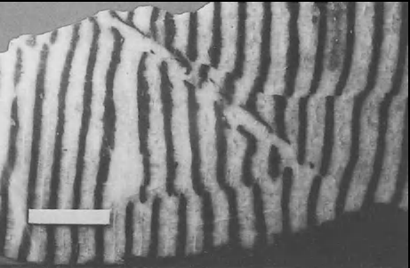
From the examples given above it can be seen that the breaking of spatial symmetry and the formation of non-equilibrium spatial structures are phenomena encountered in very different areas of chemistry. They can be caused by very different mechanisms and form on different time and space scales. What is common to all the examples described is the presence of feedback – when the course of chemical reactions influences the properties of the medium in which the reaction takes place, which, in turn, changes the rate of the reaction. The presence of these feedbacks, together with the diffusion of the reacting particles, leads to the formation of diverse types of spatial structures and the occurrence of wave processes.
In the next chapter we shall consider examples of systems in which the spatial homogeneity of the temperature in the reaction vessel is violated. As we shall see, the course of an exothermic reaction under conditions in which the released heat is transferred into a region of space enriched with unreacted substances can lead to the emergence of a stable reaction wave, which in this case is a combustion wave.